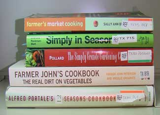

The growing season has arrived! With it comes the opening of farmers markets, where you can discover new and better flavors of the fruits and veggies you've known for years. Check out these cookbooks for wonderful recipes that will help you make use of the best ingredients of the season.
Alfred Portale's 12 Seasons Cookbook (Broadway Books, 2000).
Just as the title says, this book is broken up by month beginning in May - because May is the most bountiful month. Each month has a theme, such as “Birthdays and Barbecues” for July or “A Fresh Start” for January. The chapters begin with a short introduction and a list of recipes. Each provides some insight on which ingredients are best for that season. You can also prepare a special meal for Mother's or Father's Day with the menu plans at the end of each chapter. Be sure to try the Pancakes with Honey-Almond Butter or Asparagus Soup.
Farmer John's Cookbook: The Real Dirt on Vegetables (Gibbs Smith, 2006).
For more than 40 years John has worked on his land. He's raised chickens and cows, fruits and veggies, and now runs Angelic Organics, a community supported farm. Six different seasons make up this cookbook beginning with spring and a short introduction to the growing season. Each section lists the in-season vegetables and each recipe features one of them, such as Baked Cucumbers in Basil Cream (early season), Carrot Apricot Muffins (mid-season) or Potato Dumplings (late season). The last two chapters focus on preparing and prolonging each season and each section also has many helpful growing tips.
Farmer's Market Cooking (Black Dog & Leventhal Publishers, Inc, 1996).
This book starts with a list of ingredients - from almonds to yams -and when they are in season. Not only will you know when your local farmers market will carry these items, but you'll discover what major vitamins and minerals are in each ingredient; what to look for when picking out the produce (color, firmness or aroma); whether the food can be refrigerated or frozen, and how long it will last. The second half of the book includes recipes with the seasonal produce in bold letters. For example, you could start out with Warm Spinach and Basil Salad, have Kiwi Chicken Sauté as your entree and end with Rich Chocolate Soufflé. A directory of farmers markets in the United States and Canada is in the back.
Simply in Season (Herald Press, 2005).
Five color-coded sections make up the seasons in this handy spiral-bound cookbook. The five sections consist of the four seasons, plus a section you can consult any time of year. The spring section is green and rightly so with all of the green vegetables in season during this time - asparagus, green onions, lettuce, mint, peas and spinach. Try some Marinated Radish Salad or Three Pea Stir Fry. The beginning of the book includes a small fruit and vegetable guide, with descriptions of the produce, preparation ideas, nutrients, how to select the best ones, and how to store and handle the fruit and veggies. Simply in Season also has a children's cookbook that is set up with color-coded sections and easy-to-make recipes just for kids.
The Simply Grande Gardening Cookbook (Burford Books, 2001).
This book features 68 garden vegetables. Each vegetable is categorized by season and includes a brief history or explanation, gardening tips and recipes. It even includes unusual edibles like violets, pansies and dandelions. Try the Springtime Violet Soup or Dandelion Greens. The basic gardening guide will even help you start your own garden.
If you would like to learn more about seasonal eating or growing your own produce, browse our Organic Gardening and Real Food categories. Also check out these specific articles:
|
 PEYTON BALDWIN These seasonal cookbooks are well-read around the Mother Earth News office. |
|
|